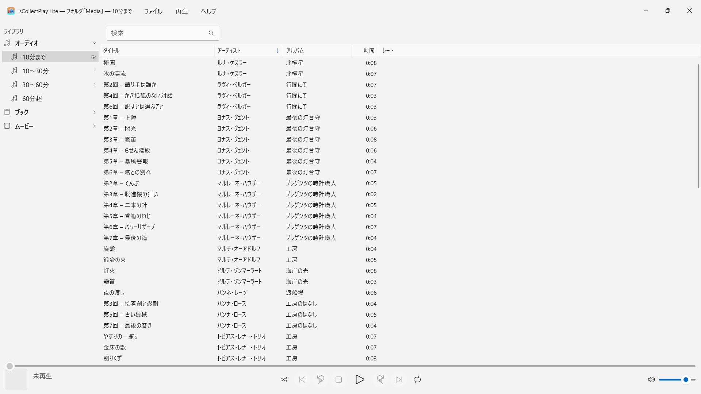
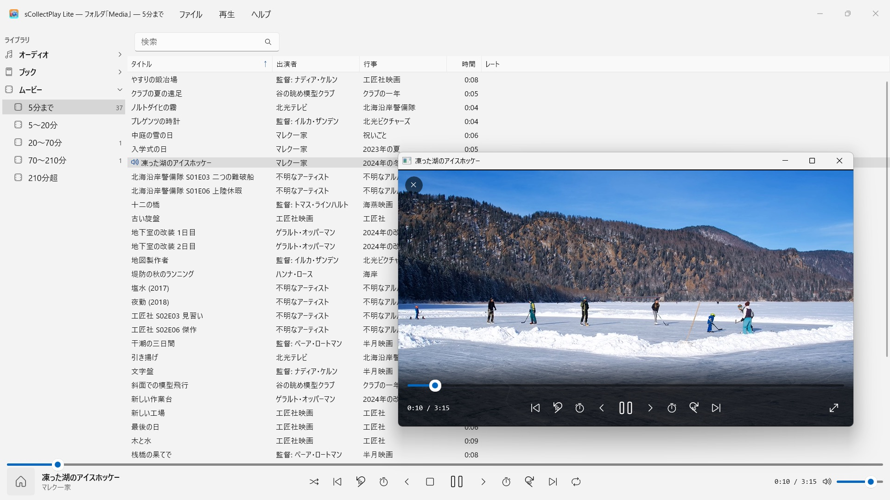

sCollectPlay Lite
無料：フォルダを選んで再生するだけ — インポートもコピーも不要
無料 · 2026年11月から Microsoft Store で提供無料：フォルダを選んで再生するだけ。音楽、オーディオブック、ポッドキャスト、映画、電子書籍が自動で整理されます。インポートもアカウントもクラウドも不要。iTunesライブラリ（XML）にも対応。


sCollectPlay Liteは、あなたのコレクションを今ある場所のまま再生します。任意のフォルダでも、外付けディスクでも、ネットワークドライブでも。フォルダを選べば、ミュージック、オーディオブック、ポッドキャスト、映画、電子書籍がひとつのリストに整然と並びます。インポートもコピーもなく、あなたのファイルは何ひとつ変わりません。
24言語に対応：英語、ドイツ語、チェコ語、クロアチア語、オランダ語、フィンランド語、フランス語、ハンガリー語、イタリア語、日本語、韓国語、ノルウェー語（ブークモール）、ペルシア語、ポーランド語、ポルトガル語、ルーマニア語、ロシア語、スペイン語、スウェーデン語、タイ語、トルコ語、ウクライナ語、中国語（簡体字・繁体字）。アプリはWindowsの表示言語に従います。
この版は、1回のセッションにつき1つのソースを再生します。フォルダかXMLのどちらかです。別のものを開くと、それまでのものと入れ替わります。
2つのソース
- フォルダ：sCollectPlay Liteはフォルダをサブフォルダごと調べ、タイトル、アーティスト、アルバム、ジャンル、再生時間をファイルそのものから読み取ります。その後「スキャンしたフォルダを更新」（Ctrl+R）は、新規・変更・削除されたファイルだけを読み込みます。
- iTunes XML：Windows版iTunesのライブラリを、プレイリスト、レート、再生回数ごと。曲がミュージック、オーディオブック、ポッドキャスト、映画、シリーズ、ミュージックビデオのどれなのかは、アプリがXMLから引き継ぎます。
手間いらずの整理
フォルダは、ファイルが曲なのかオーディオブックなのかを教えてくれません。そこでsCollectPlay Liteはスキャンの際に長さで振り分けます。音声は10分まで、10〜30分、30〜60分、60分超、動画は短いクリップから3時間半を超える映画まで。こうして曲、オーディオドラマの各話、オーディオブックが、何も設定しなくても分かれて並びます。電子書籍とPDFは拡張子で見分けます。
見つける
- タイトル、アーティスト、アルバム、ジャンルなどにまたがる検索 — プレイリストの中でも
再生
- キュー、シャッフル、リピートを備えた音声再生
- 専用ウインドウでの動画再生。スローモーション、コマ送り、音声トラックと字幕の選択、全画面表示付き
- ほとんどの形式はWindowsが自分で再生します — MP3、AAC、FLAC、OGG、Opus、WMAも、MP4、MKV、AVI、WMV、MPGも。AIFF、DSD、FLVなどWindowsが扱えないものは、Windowsでそのファイルの種類に設定されているアプリに渡します — たとえばVLC
フルバージョンではさらに
sCollectPlayは、複数のフォルダをひとつのコレクションにまとめ、最後のソースを再起動後も覚えています。さらに、ジャンル、アーティスト、アルバム別のカラムブラウザ、自由に選べる列、自分で作るプレイリストとスマートプレイリスト、そしてVLCやデバイス向けにプレイリストをM3U8リスト付きのフォルダとして書き出す機能を備えています。
あなたのファイルは、そのままに
sCollectPlay Liteはタグを書き込まず、メタデータも変更せず、何も削除しません。
あなたのPCの中だけで
アカウントなし、クラウドなし、解析なし、広告なし。アプリは、あなたが渡したフォルダだけを相手にします。どの言語にも完全なヘルプが付いています。
- Windows 11 以降が必要
- 24 言語に対応
- サポート： SwiftAppsBavaria@gmx.net
- sCollectPlayとsCollectPlay Liteのプライバシーポリシー